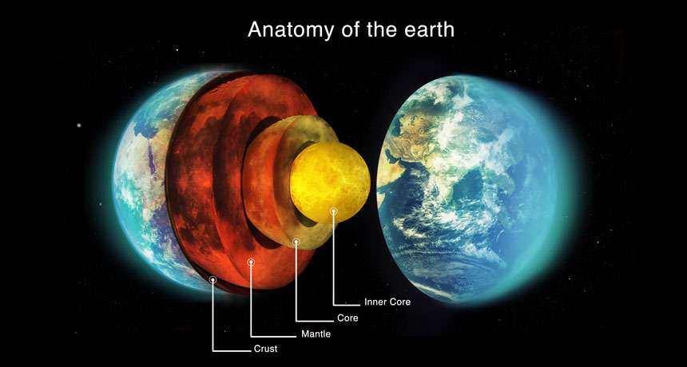

Geosphere
Learn about Earth's geosphere — its layers, structure, and vital role in shaping the planet and supporting ecosystems.
The Layers of Earth's Geosphere
The Earth's geosphere consists of the solid parts of the Earth, divided into distinct layers based on composition and physical properties: the crust, mantle, outer core, and inner core. These layers interact with other Earth systems and are essential in shaping the landscape and enabling life.

Importance of the Geosphere
The geosphere provides the foundation for terrestrial ecosystems, supplies natural resources like minerals and fossil fuels, and plays a critical role in natural cycles like the carbon and rock cycles. It also influences Earth's surface processes through plate tectonics, volcanic activity, and mountain building.
Geosphere Composition and Structure
The geosphere is primarily made of rock and metal, organized into layers with unique characteristics. From the thin crust where life exists, to the dense, metallic core deep inside the planet, each layer plays a distinct role in Earth's system.

Crust
The Earth's crust The Earth's crust is the outermost solid shell where we live. It includes continental crust and oceanic crust, composed mainly of rocks like granite and basalt.
Mantle
The Earth's mantle lies beneath the crust and extends about 2,900 kilometers deep. It is composed of silicate rocks that slowly flow, driving plate tectonics.
Outer Core
The Earth's outer core is a liquid layer made mostly of iron and nickel. Its movements generate Earth's magnetic field.
Inner Core
The Earth's inner core is a dense, solid sphere composed mainly of iron and nickel, with temperatures comparable to the surface of the sun.
The Future of Earth's Geosphere
Human activities such as mining, deforestation, and construction are reshaping the geosphere at unprecedented rates. Additionally, climate change influences geological processes like erosion and permafrost melting. Sustainable land management and conservation efforts are crucial for maintaining the balance between Earth's systems.
Types of Volcanoes
Volcanoes are openings in Earth's crust where magma, gas, and ash escape from below the surface. They form in various tectonic settings and can be classified based on shape, eruption style, and size.
Shield Volcanoes
Shield volcanoes have broad, gently sloping sides formed by low-viscosity lava flows. Examples include Mauna Loa in Hawaii.
{kind=link}
Composite Volcanoes
Composite (stratovolcanoes) are tall, steep-sided, and formed by alternating layers of lava and ash. They often produce explosive eruptions. Example: Mount Fuji.
{kind=link}
Cinder Cone Volcanoes
Cinder cone volcanoes are the smallest type, formed by fragments of solidified lava that fall close to the vent. They have steep slopes and erupt for short periods.
{kind=link}
Calderas
Calderas are a large, bowl-shaped volcanic depression formed by the collapse of the top or sides of a volcano.
{kind=link}
Flood Basalts
Flood basalts are results of giant volcanic eruptions and are vast accumulations of basalt lava that cover large areas.
{kind=link}
Mountains and Earth's Surface
Mountains are formed by tectonic forces, including the collision, compression, and uplift of Earth's crust. They are key features of the geosphere and influence climate, biodiversity, and water cycles.
{kind=link}